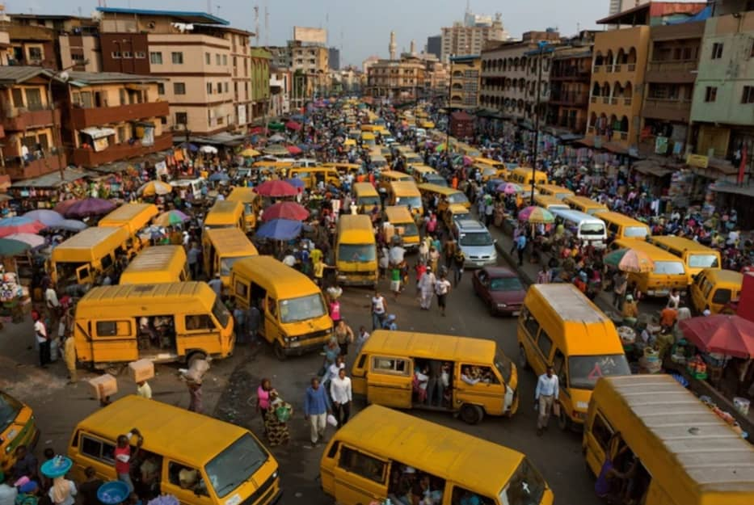

<!DOCTYPE html>
<html lang="en-us">
<head>
    <meta charset="UTF-8">
    <meta name="viewport" content="width=device-width, initial-scale=1.0">
    <title>My country</title>
    <link rel="stylesheet" href="stye/style.css">
    <meta name="Description" content="This page provides an overview of Nigeria, highlighting key aspects of the country while showcasing a realistic image of its culture, landscape, and people.">
    <meta name="Author" content="Emmanuel Henry">
</head>
<body>
    <main>
    </main>
    <aside>
<h2>Nigeria</h2>

<p>Nigeria, situated in West Africa, is the continent's most populous country, with over 200 million people. Known for its rich cultural heritage, diverse ethnic groups, and vibrant music, Nigeria plays a key role in African politics and economy. It boasts a mix of modern cities, natural landscapes, and historical sites, making it a dynamic and influential nation.</p>
    </aside>
    <footer>

    </footer>
</body>
</html>